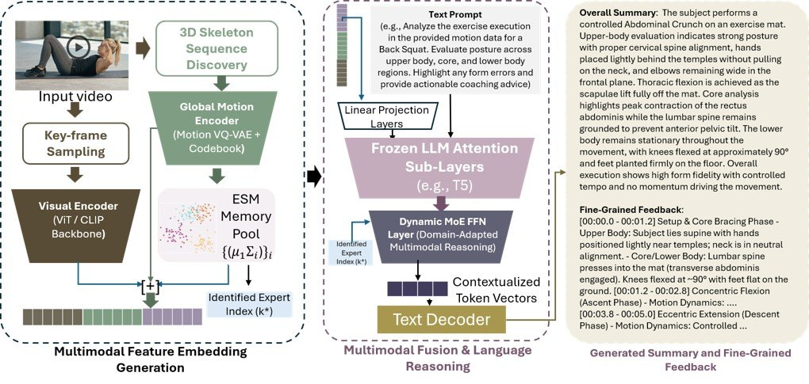

Research Overview
Key Results
See it Coach
Real-World Exercise Examples
We also evaluate the model on our own recorded exercises to test its reasoning ability on viewpoint variation, partial body truncation and occlusion, non-canonical framing, and exercise variants.
Architecture
An exercise video is converted into visual and 3D skeletal features, analyzed across upper body, core, and lower body, and routed to the most relevant kinematic expert for time-aligned feedback. New exercises are learned by initializing from the closest existing expert and training only new regional experts, preserving prior knowledge.
Expert Selection Mechanism
Each exercise is modeled as a Gaussian distribution over global motion embeddings. The router selects the expert with minimum Mahalanobis distance to the incoming motion. For a new exercise, the nearest learned expert is used to warm-start a new regional expert set, while existing experts and shared representations remain frozen to preserve prior knowledge.
Real-Time Coaching Analysis
Frame-aligned comparison between reference coaching and the model’s predictions across long-form exercise sessions, illustrating temporal responsiveness and preservation of corrective intent.
Biomechanically Grounded FLAG3D Fine-grained Captions
FLAG3D provides one coarse instruction per exercise category. We reconstruct 3D joint trajectories, extract anatomical joint angles and global-motion descriptors, segment each sequence into repetition phases, and generate timestamped captions conditioned on these measured kinematic facts. This converts category-level supervision into repetition-level, biomechanically grounded fine-grained annotations.
State-of-the-Art Performance Across Motion Understanding Tasks
Across FLAG3D, HMI, and QEVD-FIT-COACH, our model achieves state-of-the-art and competitive performance across action recognition, absolute 3D pose recovery, fine-grained motion–language alignment, motion captioning, and temporally aligned coaching.